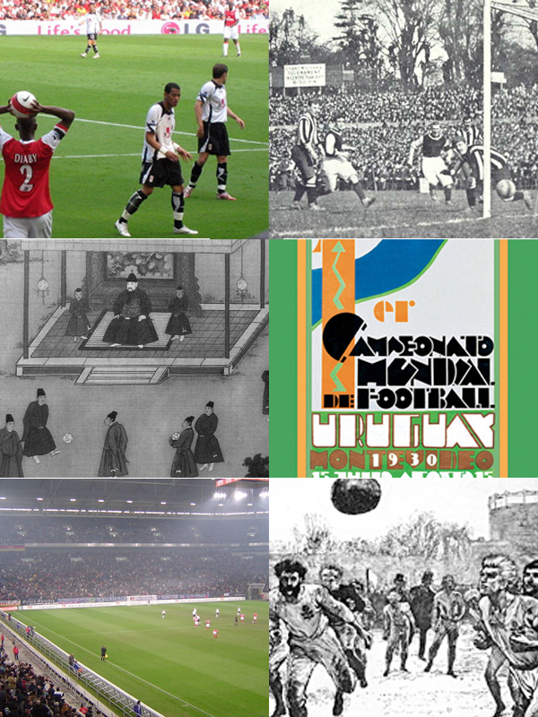
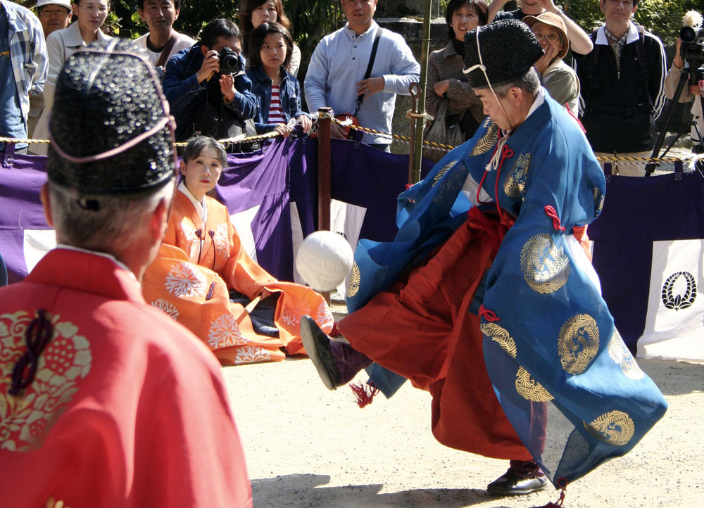
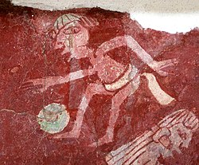
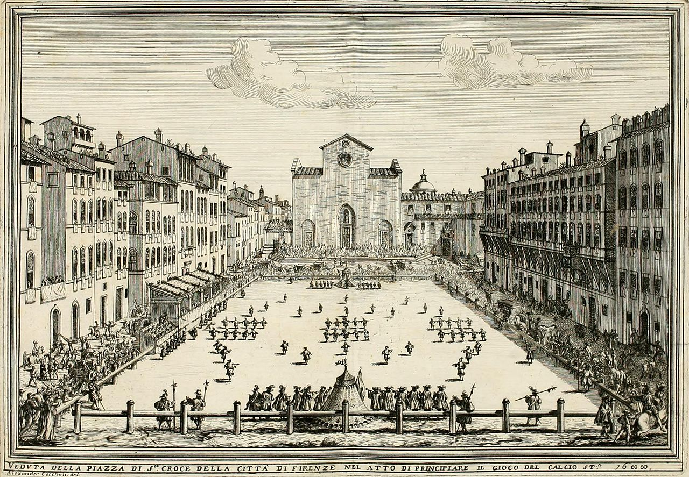

La historia del fútbol se considera a partir de 1863, año de fundación de la Asociación Inglesa de Fútbol. Sin embargo, su origen al igual que el de los demás códigos de Fútbol se remonta a varios siglos en el pasado, siendo de particular importancia los códigos utilizados en las islas británicas durante la Edad Media. Al mismo tiempo, existían varias similitudes entre los diferentes juegos de pelota que se desarrollaron desde el siglo III a. C. Los primeros códigos británicos que dieron origen al balompié se caracterizaban por su poca organización y violencia extrema. No obstante, existían otros códigos menos violentos y mejor organizados en otras latitudes. Quizás uno de los más conocidos fue el calcio florentino, deporte de equipo muy popular en Italia que tuvo incidencia en los códigos de algunas escuelas británicas. La formación definitiva del fútbol tuvo su momento culminante durante el siglo XIX. En 1848, representantes de diferentes colegios ingleses se dieron cita en la Universidad de Cambridge para crear el código Cambridge, que funcionaría como base para la creación del reglamento del fútbol moderno. Finalmente, en 1863 en la ciudad de Londres se oficializaron las primeras reglas del fútbol. Desde entonces el fútbol ha tenido un crecimiento constante que lo ha llevado a ser en la actualidad el deporte más popular del mundo. Aproximadamente 270 millones de personas al día participan directamente en la actividad; asimismo, se piensa que los aficionados son más de 4.000 millones. Con la realización de la primera reunión de la International Football Association Board en 1886 y la fundación de la FIFA en 1904, este deporte se ha expandido hasta llegar a todos los rincones del mundo. A partir de 1930 se comenzó a disputar la Copa Mundial de Fútbol, que se convertiría en el evento deportivo con mayor audiencia del mundo.
Escenas en la historia del Futbol

La actividad más antigua de la que se ha derivado el fútbol o algún otro código del cual se tenga conocimiento data de los siglos III y II a. C. Estos datos se basan en un manual de ejercicios militares correspondientes a la dinastía Han de la antigua zona central de China. El juego era llamado ts'uh Kúh (también se puede encontrar como tsu chu o luju), y consistía en lanzar una pelota con los pies hacia una pequeña red de diferentes materiales. Una variante agregaba una modalidad donde el jugador debía sortear el ataque de sus rivales. También en el Lejano Oriente, aunque unos cinco o seis siglos después del juego mencionado anteriormente, existió una variante japonesa llamada kemari, la cual tenía un carácter más ceremonial, siendo el objetivo del juego mantener una pelota en el aire pasándose entre los jugadores.
Representacion del Kemari en Japon

En el Mediterráneo se destacaron dos formas de juegos: el harpastum en Roma y el episkyros en la Antigua Grecia, sobre el cual se tiene muy poca información. El mencionado en primer término era disputado por dos equipos en un terreno rectangular demarcado y dividido a la mitad por una línea. Los jugadores de cada equipo podían pasarse un pequeño balón entre estos, y el objetivo era enviarlo al campo contrario. Esta variante fue muy popular entre los años 1900 y 800, y a pesar de haber sido introducida en las islas británicas su ascendencia hacia el fútbol actual es dudosa. Durante la Era de los descubrimientos se comenzaron a conocer deportes provenientes del Nuevo Mundo. Se estima que el pok ta pok de la cultura maya tendría 3.000 años de antigüedad. En Groenlandia también se jugaba un deporte que se asemejaba al fútbol, mientras que el juego denominado marngrook de Oceanía tenía características que lo asemejaban más al fútbol australiano. En lo que hoy es Estados Unidos los aborígenes practicaban otros juegos: el pasuckuakohowog en el área continental y el asqaqtuk en Alaska. Los indígenas de la Amazonia boliviana aseguran que sus antepasados practicaron un deporte en el que debían correr detrás de una bola de goma que debían introducir entre dos palos sin hacer uso de las manos.
Mural de un jugador de fútbol en Tepantitla cerca de Teotihuacán, México

Se conoce como fútbol medieval a los diferentes códigos practicados en la Europa de la Edad Media, particularmente en las islas británicas y zonas aledañas. El registro más antiguo de una actividad similar al fútbol moderno en la época surgió en los años 1170 de la mano de un texto de William FitzStephen, donde explicaba la realización de un juego de pelota practicado por los jóvenes londinenses. La violencia de estos juegos y la necesidad de que los soldados practicaran la arquería llevaron a que Eduardo II de Inglaterra prohibiera el juego en 1314. Desde entonces los juegos continuaron en forma ilegal. El soule era un juego de pelota francés que se practicaba en prados, bosques, landas y hasta las villas o estanques. El fin era devolver el balón en un lugar indicado, el fogón de una casa por ejemplo. En ciertos casos, hasta había que mojar el soule en una fuente antes de alojarlo en la ceniza. El juego era pues sólo una galopada inmensa entrecortada de peleas más o menos encarnizadas. El instrumento de juego podía ser una pelota de cuero, una vejiga de cerdo llena de heno, una pelota de tela o una bola de madera. Uno de los documentos más antiguos que conciernen a la soule es una ordenanza del rey Carlos V de Francia de 3 de abril de 1365, en la que precisa que no puede figurar entre los juegos que sirven el ejercicio del cuerpo. En 1440, otra interdicción hecha por el obispo de Tréguier precisa que este juego ya se practica desde hace muchísimo tiempo y amenaza a los jugadores con la excomunión y 100 sueldos de multa, lo que prueba que la soule fue muy apreciada en aquella época.
Un campo de calcio florentino en la Plaza de la Basílica de Santa Cruz en Florencia (1688)

Pelé es considerado por la FIFA como el mejor jugador del siglo XX.
Según la Federación Internacional de Historia y Estadística del Fútbol (IFFHS), reconocida por la FIFA, la lista de los 5 mejores jugadores de fútbol del mundo en el siglo XX es la siguiente: